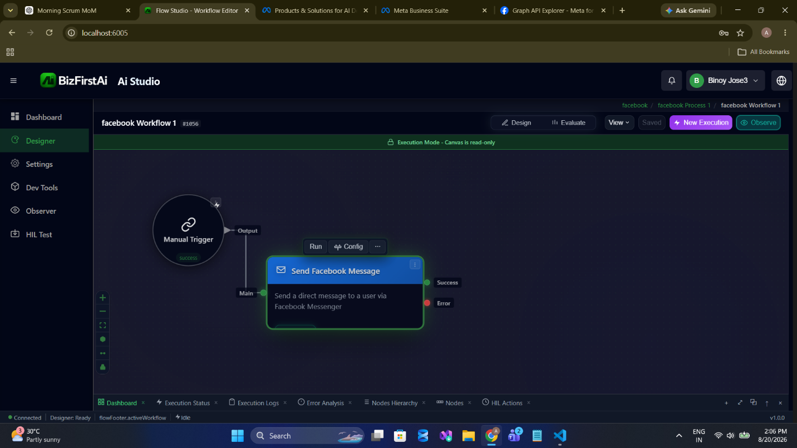
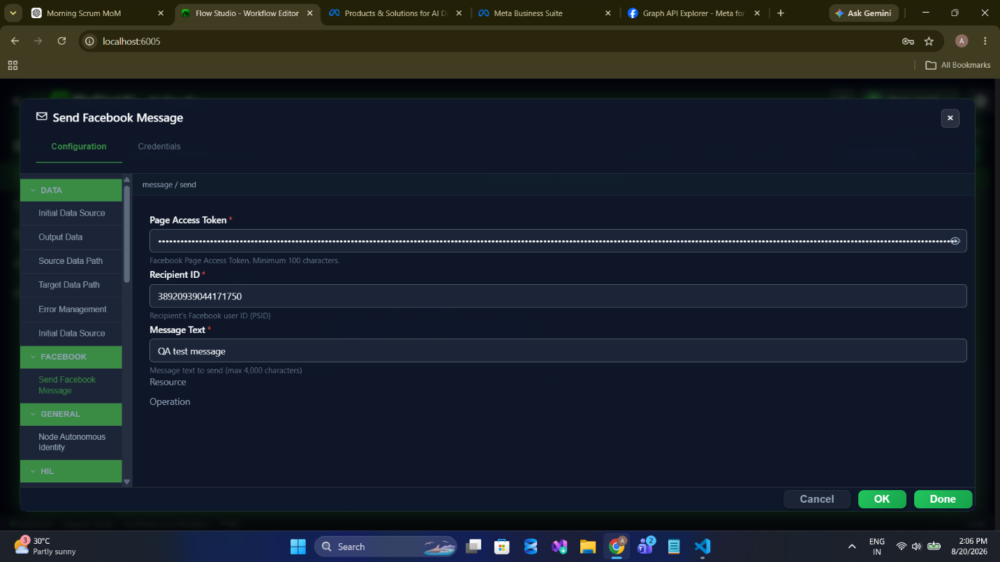
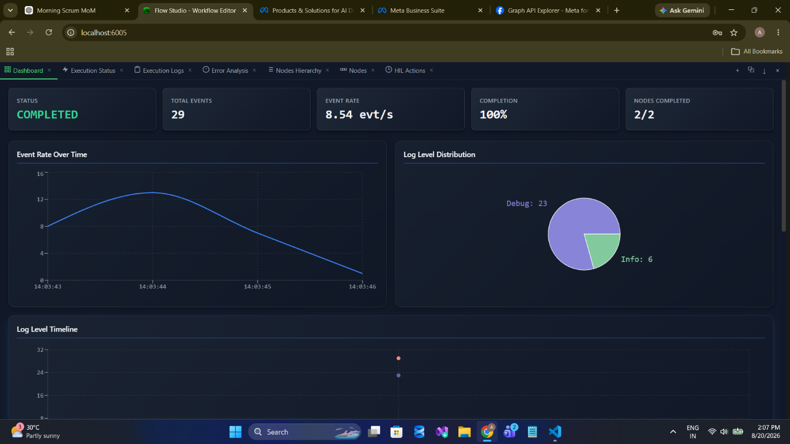
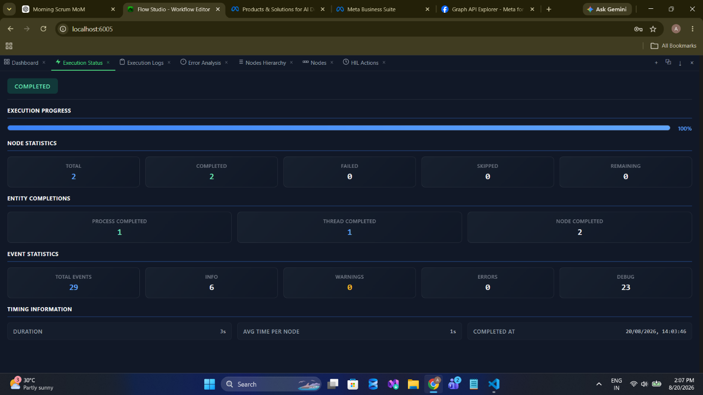
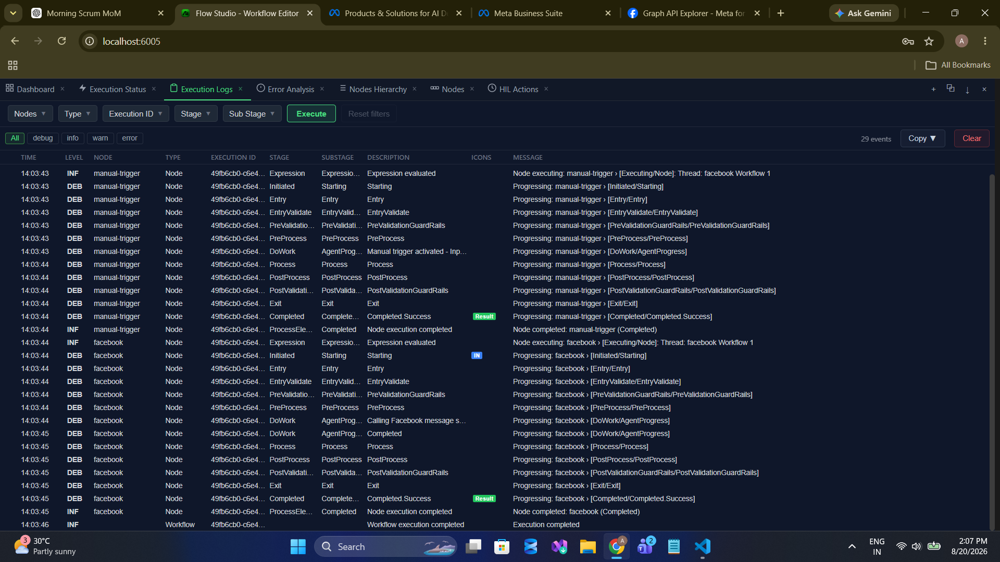
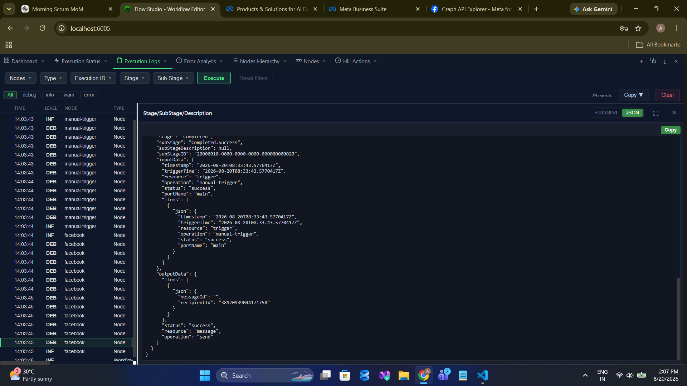
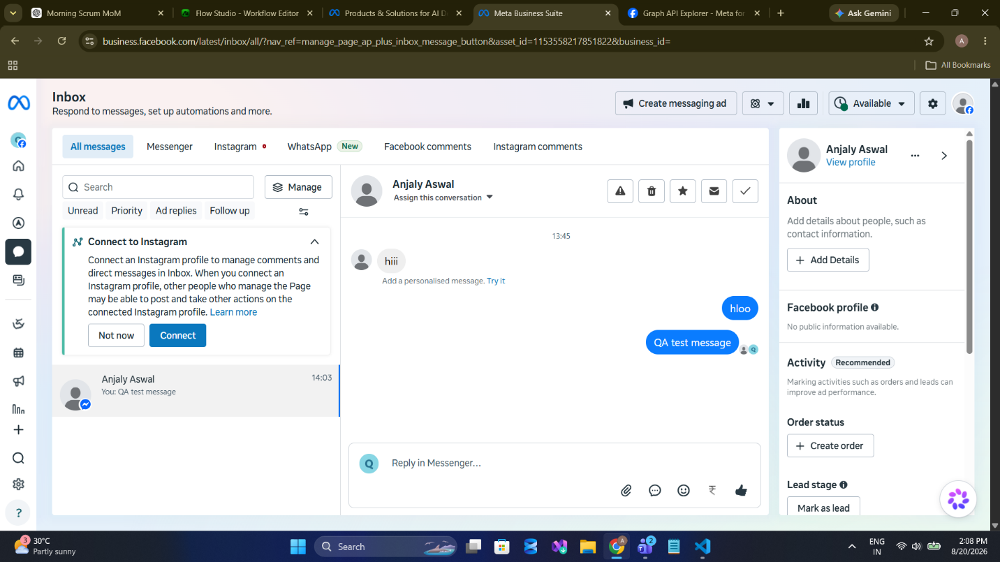

message/send
Send a Messenger text message from the Page to a user. Requires a Page-Scoped ID and an open 24-hour messaging window.
Palette name: Send Facebook Message · Graph call:
POST /me/messages · Permissions: pages_messaging · Field reference: Message Operations
Two constraints decide whether this works at all.
• The recipient must be a PSID — a Page-Scoped ID, not a Facebook user ID. A PSID only exists once that person has messaged your Page. You cannot cold-message anyone.
• The 24-hour window. A Page may reply freely only within 24 hours of the user's most recent message. Outside it, Facebook rejects the send on policy grounds.
• The recipient must be a PSID — a Page-Scoped ID, not a Facebook user ID. A PSID only exists once that person has messaged your Page. You cannot cold-message anyone.
• The 24-hour window. A Page may reply freely only within 24 hours of the user's most recent message. Outside it, Facebook rejects the send on policy grounds.
When to Use
- Automated first response. Acknowledge an inbound Messenger enquiry immediately, inside the window.
- Private follow-up to a public comment. Move an account-specific conversation out of the comment thread.
- Order or ticket updates to a customer who opened the conversation.
- Hand-off notice when a workflow escalates a conversation to a human agent.
Walkthrough
1Get a PSID first
Run message/getConversations and read a participant ID out of the result. Without that, there is nothing valid to put in Recipient ID.
2Place the node

3Configure

message / send. Note there is no Page ID field — the endpoint is /me/messages and the Page is implied by the token.4Run



5Read the output

messageId came back empty on this successful send. Graph does not always return a message ID for this endpoint, and the node emits "" rather than omitting the field. Treat the success port — not a populated messageId — as the signal that the message went out.6Verify in the inbox

Configuration
| Field | Required | Description |
|---|---|---|
resource | Required | Must be message. |
operation | Required | Must be send. |
pageAccessToken | Required | Page access token, or a stored credential. |
recipientId | Required | The recipient's PSID. Obtain it from message/getConversations. |
messageText | Required | Plain text body. Maximum 4,000 characters. |
Plain text only. This operation sends a text message. Attachments, templates, quick replies, and buttons are not supported.
Sample Configuration
{
"resource": "message",
"operation": "send",
"credentialID": 4021,
"recipientId": "38920939044171750",
"messageText": "QA test message"
}Auto-acknowledging an enquiry, with the PSID taken from a parsed conversation list:
{
"resource": "message",
"operation": "send",
"credentialID": 4021,
"recipientId": "{{ $output.parsedConversation.items[0].senderId }}",
"messageText": "Thanks for your message. An agent will reply within one business hour."
}Output
| Field | Type | Description |
|---|---|---|
status | string | "success" |
items[0].messageId | string | Message ID when Graph returns one. Often empty even on success — do not branch on it. |
items[0].recipientId | string | The PSID the message was sent to, echoed back. |
{
"status": "success",
"resource": "message",
"operation": "send",
"items": [
{
"messageId": "",
"recipientId": "38920939044171750"
}
]
}Validation
| Message | Cause |
|---|---|
Invalid access token | Token blank or shorter than 100 characters. |
Invalid recipient ID | recipientId is blank. |
Message exceeds maximum length of 4000 | Body too long, or blank. |
Notes and Cautions
- A Facebook user ID is not a PSID. Passing a profile ID produces a Graph error, not a delivered message. PSIDs are scoped to your Page — the same person has a different PSID for every Page.
- Outside the 24-hour window, Facebook refuses the send. Message tags and paid messaging channels exist to work around this, but the node does not support them. Design workflows to reply promptly instead.
- Messaging is the most heavily reviewed permission. Going live with
pages_messagingrequires App Review with a screencast and a stated use case — the longest lead time of any permission this node needs. Start it early. See Authentication. - Not idempotent. Two runs send two messages.
Related
- message/getConversations — the only supported way to obtain a PSID
- post/comment — reply publicly instead
- Troubleshooting — policy and permission errors